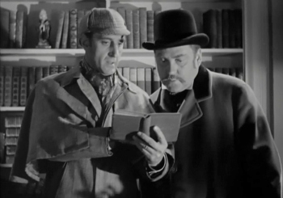

The greatest trick the devil ever pulled, was convincing the world he didn't exist.
Q42 meetup, Amsterdam 2017

Houston, we have a problem.
The greatest trick the devil ever pulled, was convincing the world he didn't exist.
Let's go to the Winchester, have a pint, and wait for this to all blow over.
I'm sorry Dave, I'm afraid I can't do that.
Frankly, my dear, I don't give a damn.
Hello. My name is Inigo Montoya. You killed my father. Prepare to die.
I'm not bad, I'm just drawn that way.
Aristotle was not Belgian. The central message of Buddhism is not 'every man for himself.' And the London Underground is not a political movement. Those are all mistakes, Otto. I looked 'em up.
Gentlemen, you can't fight in here, this is the war room.
You're gonna need a bigger boat.
Man who catch fly with chopstick accomplish anything.
Toto, I have a feeling we're not in Kansas anymore.
Badges? We ain't got no badges! We don't need no badges!
This is your last chance. After this, there is no turning back. You take the blue pill, the story ends, you wake up in your bed and believe whatever you want to believe. You take the red pill, you stay in Wonderland and I show you how deep the rabbit-hole goes.
You’re ancestors called it magic, and you call it science. Well, I come from a place where they’re one and the same thing.
So in the face of overwhelming odds, I’m left with only one option. I’m gonna have to science the shit out of this.
First principles, Clarice. Simplicity.
Don't believe everything you hear, and only half of what you see.

Computer, magnify. Times 10.
If I'm not back in five minutes... just wait longer.
If you focus on what you've left behind, you will never be able to see what lies ahead.
It's not rocket science.
Life was like a box of chocolates, you never know what you're gonna get.
There's three ways to do things - the right way, the wrong way, and the way that I do it.
It's not the years honey, it's the mileage!
Those are very challenging observations you made.
I think this is the beginning of a beautiful friendship.
I told you - aim for the target, come in under the radar.

You're only supposed to blow the bloody doors off!
Nobody's perfect!
I guess it comes down to a simple choice really, get busy living or get busy dying.
I'll have what she's having!
Oh my gosh, look at that fluffy unicorn! He's so fluffy, I'm gonna die!
Carpe diem. Seize the day... Make yourselves extraordinary